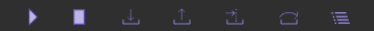
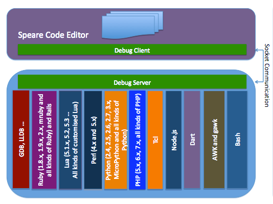

____
/ __/ __ ___ ___ ___ ___
_\ \/ _ \/ -_) _ `/ __/ -_)
/___/ .__/\__/\_,_/_/ \__/
/_/
Speare Pro v1.2.80
The free small IDE for scripting languages.
(c) 2020 http://www.sevenuc.com
Speare code editor is a small, free and friendly code editor, and a really ultra light IDE. You can use it to edit all kinds of text file, programming and debugging with almost all common programming languages. It designed to make programming feels light, simple and free. Speare code editor not only has an efficient code navigation and call routines tracing ability but also has flexibility to extend the IDE to support special developing requirements and easily to add a new programming language in it. Speare code editor includes builtin debugging environment for C, C++, Ruby, mruby, Lua, Python, PHP, Perl and Tcl, and give you complete freedom to control and customise a debugging environment for any programming language.
The offline document: Speare_debugger_quick_reference.pdf.
Debugger Index:

If you can't open the link above, please launch App Store and found
Debug Mode
1. Click siding bottom button to show the debug toolbar.
2. Debug toolbar:

From left to right, Start, Stop, Step Into, Step Out, Run To, Step Over, Show Watches. The "Step Over" is equals to "Step next", and "Step To" is equals to "Continue" in common debugging words, and the "Step To" is the command that tell the debugger run to meet a breakpoint or an exception occurred or the program meet exit. On the rightmost there are three other function units, they are, search items in the stackview, siding stackview, and clean debug output.
Search in the debug output: click in the output area and use the shortcut key "Control + F" to do the searching.
3. Socket port:
You can set the socket communication port number both used by Debug Server and the Speare code editor. Open the Preferences of Speare and select the "Debug Settings" tab then input your number.
Please remember to empty the port number when you switched to debugging with the default builtin programming languages with default port number.
4. Watches:
Watches used to evaluate variable or expression and their values can be realtime showing in stackview when debugging session paused, the nodes normally has a green colour and always placed on the top of stackview.
- a.
Please ensure all source files have been dragged in the left side Treeview (Workspace Explorer) before start a debug session, because macOS app can't be allowed to access files outside of its sandbox. - b.
When your source code file moved to another folder, you must drag the source code folder in Speare again then the debugging can correctly work.
Debugger Architecture
Proposed debugging environment support in Speare code editor are: GDB, LLDB, Ruby, mruby, Lua, Python, Perl, PHP, Tcl, Node.js, Dart, AWK and shell. Speare code editor provides very concise and simple interface to add new programming language in it, end user can very easily write a new programming language parser, syntax highlighting, code formatter and debugger for it, please refer this guide: language_extension_protocol.pdf.
Debugging code with Speare code editor
Speare code editor provides an intuitive debugging environment allows adding breakpoints and the execution flow can be viewed and controlled and has the abilities that an IDE debugger will give you over trace execution in code, view the call stack at any point in time, giving you a context for your current stack frame, step into libraries or sub modules that you want to tracing the debug symbols, and change variable values while the program is running. It provides simple interfaces that can be integrated with any command line tools without boring configuration, giving you the flexibility you need to debug code at hand. The debuggers of Speare code editor, the source-level debuggers, helps you step through the code line by line and observe the runtime behaviour of your program and got a better understanding of your code.
C and C++ Debugger
The C and C++ debugger of Speare code editor implemented as a script client of LLDB, and support extend it by yourself. The builtin module supports parsing modern C++ source code files including C++11 and C++14 syntax, e.g effectively name and index namespace and anonymous class, function and many other new features of the C++ programming language. You can enjoy debugging almost any type of C and C++ applications under the lightweight debugging environment of Speare code editor.
Start Debugging Steps:
1. Download Speare Debug Server: → http://www.sevenuc.com/download/c_debugger.tar.gz (10KB)
2. Uncompress the tarball to your local directory. e.g ~/Desktop and take a look at the readme.txt in it.
3. Start the debug server:
4. Debug session start: click "Start" button on the debug toolbar of Speare code editor.
5. Run extra commands:
a. Add function breakpoints
.
.
b. Process operation
.
.
c. Thread operation
.
.
.
.
.
.
d. Watchpoint operation
.
.
e. Frame operation
.
.
f. Display variable value
.
Tips: Run to (run to meet a breakpoint), the source file that you want debugger stopped in it must already opened and has at least one breakpoint before run the command.
6. Modify the C and C++ debugger:
How to compile and install GCC on macOS?
This page described how to compile GCC on macOS step by step in details: → compile a stable version of GCC on macOS.
About the C programming language
C is not safe but it is the strongest programming language and the most strongest softwares were written with it, including operation system and the most important infrastructure of internet and software industry, think about BIND, Apache, Nginx, MySQL, PostgreSQL, SQLite, Berkeley DB, Redis, Memcached, PHP, Perl, Ruby, Python, Lua, Git, FFmpeg and other countless excellent softwares. If sqlite and git were written with C++ or Java, I'll throw them away immediately. C is top professionals' language, most developer have never written a real C software in their life, a mature developer may needs ten years to really write software with it. The product quality of the software industry is directly proportional to the number of experienced C programming experts.
The Tao and Kung Fu of Programming
Why all attempts failed? They want to create new programming language to resolve problem in software industry, but all attempts failed. Any new programming language that intended to achieve a seamless translation from Lisp (or Lisp like language, e.g Javascript) to native executable code will failed at final. The product quality of the software industry is directly proportional to the number of experienced C programming experts, but experienced C developer and C ninja are rare and rare, because only a few people can walk on this difficult way. C is really unsafe and really difficult to master, to be a mature C developer or an C expert, a developer may needs about ten years to continually experience it. Programming is difficult, there is no shortcuts for programming, programming language itself can't resolve it. Only the honest and continuous improving of the C programming skills is the reliable way.
"C + elegant scripting language" is the reliable, efficient and flexible extending solution.
Most developer have never written a real C software in their life,
mruby Debugger
The mruby debugger of Speare is a patched version of mruby that support remote debugging mruby project, currently support mruby version 2.0.1 and 2.1.0.
1. Install mruby debugging server
2. Configuring Speare code editor
Launch Speare and open the Preferences of Speare and select the tab of "Debug Settings" then check on "Enable mruby debugging". Please remember to turn the option off when you switched to debug common Ruby applications.
3. Debug Session Start
Tips: Separate modules of your app with mruby gems instead of using require.
Ruby Debugger
The Ruby debugger of Speare code editor implemented as a client of rdebug-ide, and Ruby interpreter that has a rdebug-ide installed will be running as the debug server.
Ruby debugging environment support all kinds of Ruby interpreters, the version includes: 1.8.x, 1.9.x, 2.x, and JRuby.
Steps of start debugging session:
1. Download and install debug gems:
For Ruby 1.8.x: download: ruby-debug-base (0.10.4)
For Ruby 1.9.x: download: ruby-debug-base19 (0.11.25)
For Ruby 2.x:
2. Start the debug server:
(please replace the main.rb file with your script file.)
For Rails:
3. Debug session start:
4. Add condition breakpoint:
Right click in the stackview (bottom left side) and then input extra command when the debugging session paused. Left click anywhere outside of the input box to close it and the command will be directly send to the debug server.
a. Variables
.
.
.
b. Expression
.
.
.
.
c. Backtrace
.
.
.
.
d. Jump
Change the next line of code to be executed.
.
.
.
e. Thread
.
.
.
.
.
.
f. Type Set
.
g. File Operation
.
.
.
.
6. Switch Ruby interpreter:
You can directly switch between any Ruby interpreter or your own version of Ruby and then config it to support rdebug-ide.
Appendix: make a fresh Ruby debugging environment
Step 1. build an openssl library
$ download https://www.openssl.org/source/openssl-1.0.2t.tar.gz
$ tar -zxvf openssl-1.0.2t.tar.gz
$ cd openssl-1.0.2t
$
Lua Debugger
The Lua debugger of Speare code editor implemented as a module of Lua, and support all common versions of Lua. You can conveniently enjoy debugging with any kinds of customised Lua interpreter and LuaJIT.
Tested Lua version includes: 5.1.4, 5.1.5, 5.2.4, 5.3.5 5.4.0-alpha
Start Debugging Steps:
1. Download Speare Debug Server: → http://www.sevenuc.com/download/lua_debugger.tar.gz (518KB)
2. Uncompress the tarball to your local directory. e.g ~/Desktop and take a look at the readme.txt in it.
3. Start the debug server:
4. Debug session start: click "Start" button on the debug toolbar of Speare code editor.
5. Replace Lua interpreter:
Python Debugger
The Python debugger of Speare Pro supports Python version 2.5, 2.6, 2.7 and 3.x, and MicroPython. You can enjoy debugging Python scripts as same as debugging web applications that based on web frameworks such as Flask and Django under the lightweight environment of Speare code editor.
Steps of Start Debugging Session:
1. Download Speare Debug Server: → http://www.sevenuc.com/download/python_debugger.tar.gz (30KB)
2. Uncompress the tarball to your local directory. e.g ~/Desktop and take a look at the readme.txt in it.
3. Start the debug server:
4. Debug session start: click "Start" button on the debug toolbar of Speare code editor.
5. Add condition breakpoint
6. Run Extra Commands:
a. Remove all breakpoints
.
b. Stack trace and frame operation
.
.
.
c. Display argument list
.
d. Display return value
.
e. Display value of expression
.
.
.
.
.
f. Display argument type
.
g. Display source code of object
.
h. Continue execution
.
.
i. Add module search path
.
PHP Debugger
The PHP debugger of Speare code editor supports all kinds debugging of PHP applications and any version of PHP interpreter that has Xdebug support from PHP 5.x to PHP 7.x. Different with Lua, Ruby and Python debugging, this time Speare acts as debug server and Xdebug as the client.
Setting up Xdebug for PHP Debugging:
1. Download Xdebug:
https://xdebug.org/files/xdebug-2.6.0.tgz
2. Compile and install Xdebug:
At this step Terminal will report:
/usr/lib/php/extensions Operation not permitted.
This is because SIP default set to be enabled by macOS, even you execute sudo operation, the system protected directories still can't be writable.
WARNING: THE FOLLOWING OPERATION IS VERY DANGERS.
Assuming that you know what you’re doing, here is how to change SIP (System Integrity Protection) settings on your Mac. Turn off your Mac (Apple → Shut Down...), hold down Command-R and press the Power button. Keep holding Command-R until the Apple logo appears and wait for OS X to boot into the "OS X Utility" window and then choose Utilities → Terminal.
Turn off SIP:
Turn on SIP:
After you turn off SIP and execute "$ sudo make install" again, Xdebug should be successfully installed on you system, you can check it by this command:
It should print something like the following:
Copyright (c) 1997-2018 The PHP Group
Zend Engine v3.1.0, Copyright (c) 1998-2018 Zend Technologies
with Xdebug v2.6.0, Copyright (c) 2002-2018, by Derick Rethans
3. Configuring web server:
LoadModule alias_module libexec/apache2/mod_alias.so
LoadModule rewrite_module libexec/apache2/mod_rewrite.so
LoadModule php7_module libexec/apache2/libphp7.so
Include /private/etc/apache2/other/*.conf
Edit file http.conf and ensure the above lines not be commented.
Save back the settings file.
Check there syntax is legal (optional).
4. Configuring PHP interpreter:
[xdebug]
zend_extension = /usr/lib/php/extensions/no-debug-non-zts-20160303/xdebug.so
xdebug.remote_enable = 1
xdebug.remote_host = "127.0.0.1"
xdebug.remote_port = 9000
xdebug.remote_handler = "dbgp"
xdebug.remote_mode = req
xdebug.remote_connect_back = 1
xdebug.remote_autostart=1
Edit file php.ini.default and carefully check the above content have been written in it.
Note: xdebug.remote_autostart=1 should be removed at product environment.
Save back the settings file.
Rename the settings file to take effect.
5. Run PHP test with Xdebug:
echo phpinfo();
?>
Save the above content in a file named test.php and put it under /Library/WebServer/Documents/
Restart apache, launch Safari and request: http://127.0.0.1/test.php.
There're some text in zend engine section should be as same as printed by execute the command "$ php -v" on command line.
Steps of PHP Debugging with Speare code editor:
6. Switch PHP interpreter:
You can switch any version of PHP interpreter directly, it does not affect the server side Speare code editor. PHP is an excellent programming language to develop Web Applications based on frameworks such as Drupal, Zend Framework, CodeIgniter, Symfony and Yii framework etc, but not limited that, in fact PHP is also very suitable to develop command line applications.
Perl Debugger
The Perl debugger of Speare code editor implemented as a patched version of perl5db.pl, and support extend it by yourself. The debugger was based on the builtin debugger of Perl, so it can work with all versions of Perl interpreter that perl5db.pl supported.
Start Debugging Steps:
1. Download Speare Debug Server: → http://www.sevenuc.com/download/perl_debugger.tar.gz(104KB)
2. Uncompress the tarball to your local directory. e.g ~/Desktop and take a look at the readme.txt in it.
3. Start the debug server:
4. Debug session start: click "Start" button on the debug toolbar of Speare code editor.
5. Run extra commands:
a. Add function breakpoints
.
b. Add condition breakpoints
.
.
c. Watchpoint operation
.
.
.
d. Evaluate express
.
e. Display variable value
.
.
6. Switch Perl interpreter:
About Perl
There exists huge number of mature and reliable Perl modules in cpan, as a general-purpose Unix scripting language, Perl is the most suitable programming language to resolve your problem at some situation, from the server side powerful tool such as load balancer to web applications, and large scale enterprise applications.
Tcl Debugger
The Tcl debugger of Speare code editor implemented with Tcl scripts and an extension written with C to parse Tcl source code, and support extend it by yourself. You can enjoy debugging almost all kinds of Tcl applications under the lightweight debugging environment of Speare code editor.
Start Debugging Steps:
1. Download Speare Debug Server: → http://www.sevenuc.com/download/tcl_debugger.tar.gz (223KB)
2. Uncompress the tarball to your local directory. e.g ~/Desktop and take a look at the readme.txt in it.
3. Start the debug server:
4. Debug session start: click "Start" button on the debug toolbar of Speare code editor.
5. Modify the Tcl debugger:
6. Switch Tcl interpreter:
Debug Node.js applications
1.
2.
Above is the simplest approach to debug Javascript scripts or Node.js application with Chrome Developer Tools.